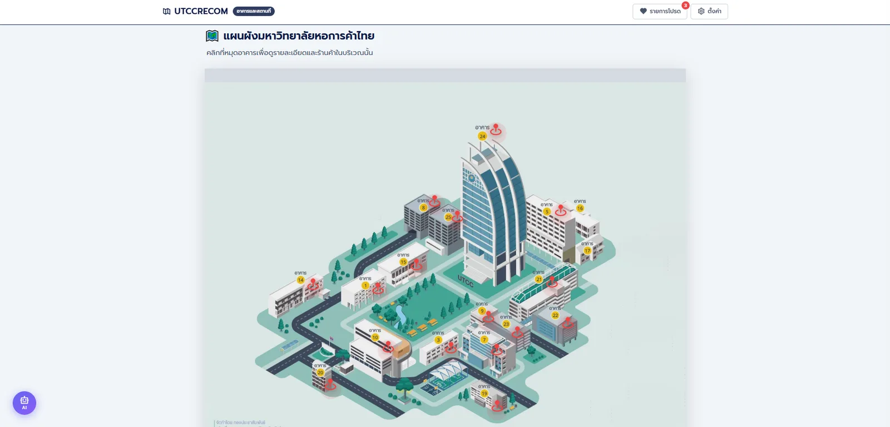
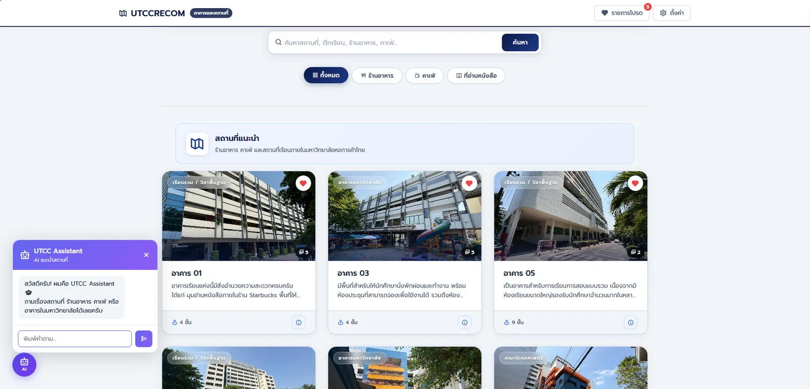
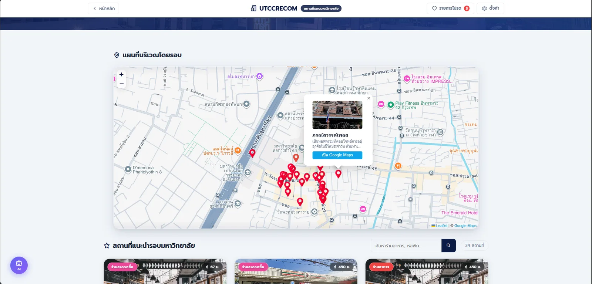
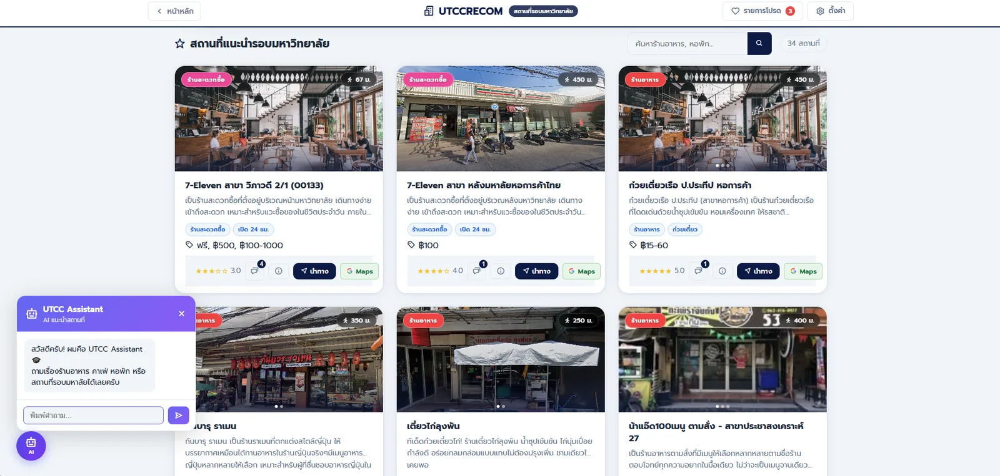
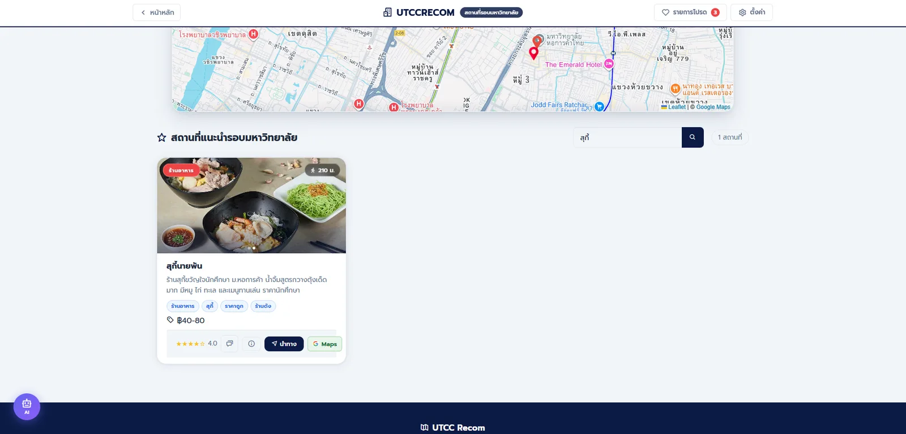
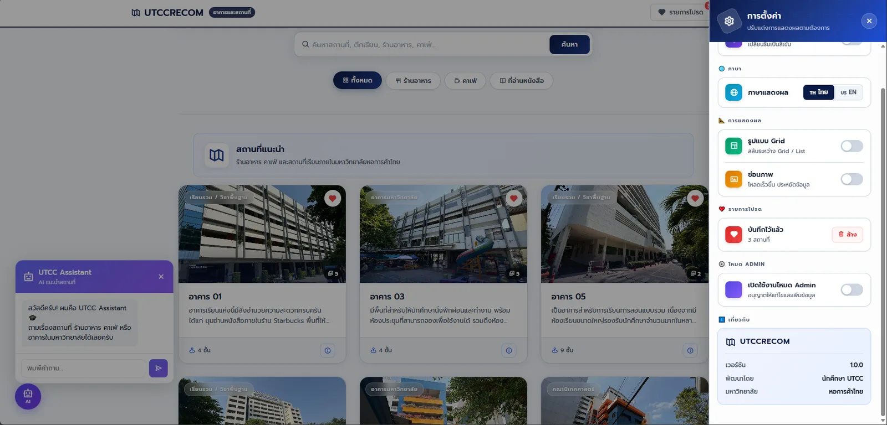
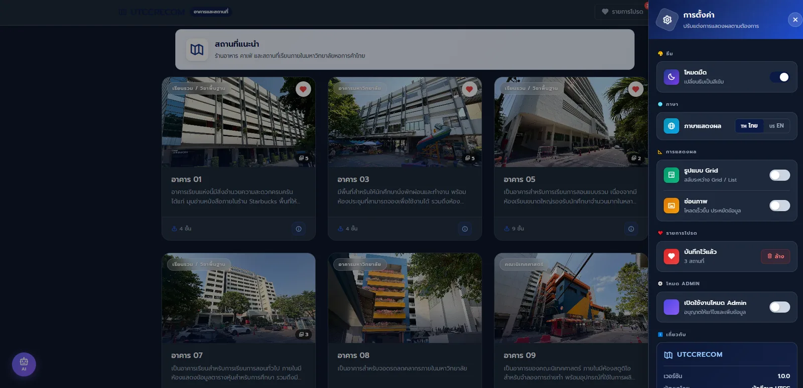

UTCC RECOM
เว็บแนะนำอาคาร สถานที่ภายในมหาวิทยาลัย และร้านอาหาร คาเฟ่ หอพัก รอบมหาวิทยาลัยหอการค้าไทย พร้อมแผนที่ รีวิว และ AI chatbot

Overview
เว็บนี้ทำอะไร
รวมอาคารและสถานที่ภายในมหาวิทยาลัย กับร้านอาหาร คาเฟ่ หอพัก และบริการรอบมหาวิทยาลัยไว้ในเว็บเดียว พร้อมแผนที่ รีวิว และ AI chatbot ช่วยหาสถานที่
สิ่งที่ผมทำ
- ค้นหา กรองตามหมวดหมู่ และอัปเดตเนื้อหาด้วย JavaScript ดึงข้อมูลจาก REST API
- สร้าง REST API ด้วย Spring Boot เชื่อม PostgreSQL บน Supabase
- เขียน manual test cases และ API checks ตรวจการทำงานและบันทึก defect
Tech stack
Java 17 · Spring Boot 3.2 · Spring Data JPA · PostgreSQL / Supabase · Gemini API · HTML · CSS · JavaScript · Maven
Screens














Features
- ค้นหาและกรองสถานที่ตามหมวดหมู่
- เพิ่ม แก้ไข และลบข้อมูลสถานที่
- รีวิวและให้คะแนนสถานที่ พร้อม AI สรุปรีวิว
- AI chatbot ช่วยหาสถานที่
- รองรับภาษาไทย/อังกฤษ และ Dark Mode
Testing
สิ่งที่ผมทดสอบ
- เขียน manual test cases ตามการใช้งานจริงของแต่ละหน้า
- ตรวจ REST API ด้วย Postman ทั้งกรณีปกติและกรณีผิดพลาด
- บันทึก defect ที่เจอเป็น bug report
เอกสาร QA ในโปรเจกต์
Manual Test Cases, API Testing, Bug Reports, Regression Checklist และ Test Summary ผลแต่ละเคสระบุเป็น PASS, FAIL, BLOCKED หรือ NOT RUN